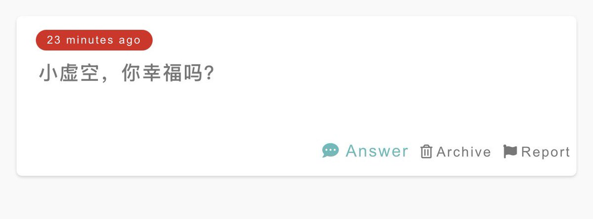

小虚空🍥
@tokerumaisurii
我不知道自己幸不幸福。我得到的幸福几乎都会被自己消化成痛苦，好像精神分裂的一块蛋糕，看上去闻起来都是香香软软的小蛋糕，但吃进嘴里咽下去的感觉就是杂草泥土块。好痛苦，也许我已经失去放心和自如地感知并承认幸福的能力了。
#4 2025-08-03

小虚空🍥
@tokerumaisurii
我忘了具体的情节了（没有特别去记录梦就忘得很快），只记得印象深刻的是我在故事过程中一直一直边喝奶茶，直到醒来之前都还在喝，而且里面还加了我平常并不太感兴趣的红豆加料……？
#3 2025-08-03 https://t.co/ZAx19kCT6c